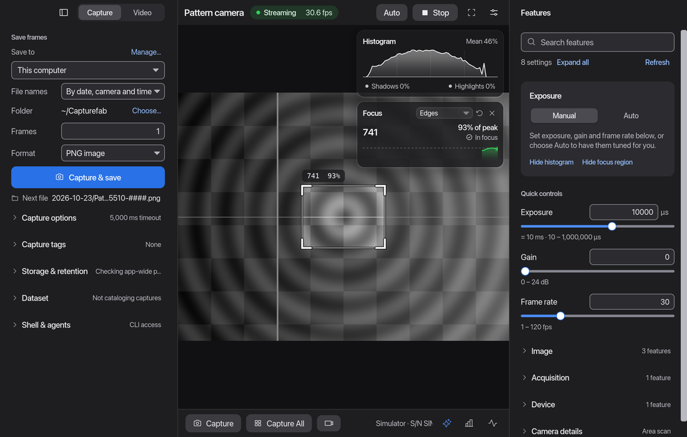
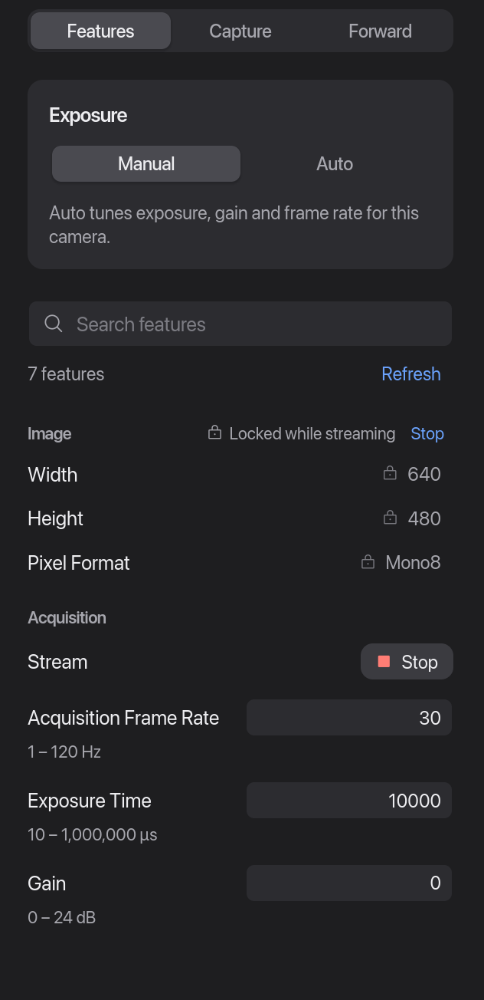
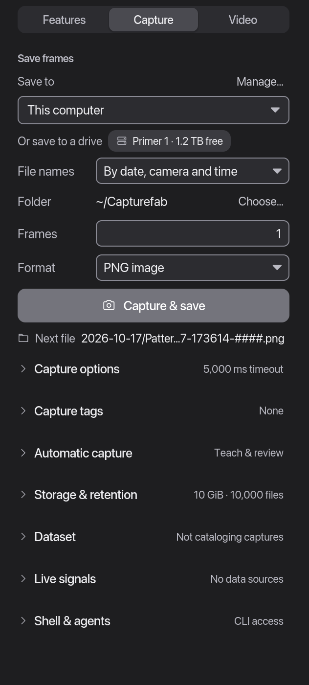
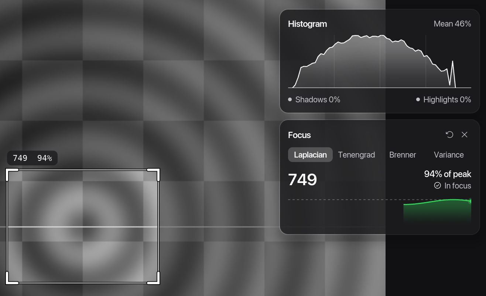
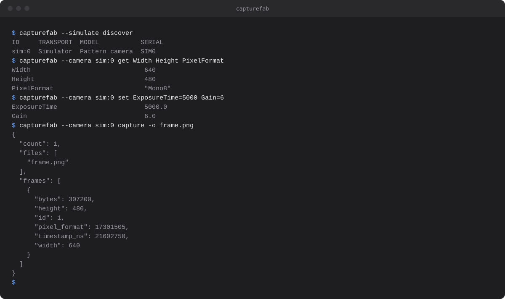

Capturefab
Capturefab
01 / Live settings
Change a setting, watch the image respond
A CLI command raises the simulator camera's exposure, then restores it. The live preview and the Exposure control update while the stream keeps running.
Free, open-source (MIT) camera workbench
For manufacturing, process and vision engineers. GigE Vision and USB3 Vision are built in, plus webcams, RTSP/ONVIF streams and hub cameras. Captures are cataloged and export to Parquet or CSV, from the desktop app, scripts or AI agents.
Free and open source (MIT). macOS, Windows and Linux.
App and CLI in one download.

Camera support depends on the device, connection and operating system. Read the connection guide →
See the controls and the result
These short clips show the desktop app with simulator cameras. Each clip plays in a loop without sound. Use the controls to pause it.
A CLI command raises the simulator camera's exposure, then restores it. The live preview and the Exposure control update while the stream keeps running.
A CLI command saves three frames, then one PNG image. The desktop app shows the saved result.
Examine before you capture
Use camera features, image scopes and capture settings in the same app.

Read feature names, values and limits. If the camera supports the controls, set exposure, gain and image dimensions.
Camera features →
Save one image or a sequence. Select the format, frame count and storage limits before capture.
Capture settings →
Use the focus metric and histogram to examine changes in the live image.
Preview and image scopes →Real app captures with simulator data, recorded from Capturefab 0.4.0 source. Details can differ slightly in your release.
People, scripts and agents can share a camera session. The preview and Activity log let you review actions and take control.
Use Claude Code, Codex, Antigravity or another agent that runs CLI commands. Capturefab supplies camera tools and JSON results.
Your agent manages its model access. Capturefab provider settings are unnecessary for this method.
Set up an external agentDownload agent instructionsChoose a provider in Settings → AI assistant. Supported Macs can use Apple Intelligence for local text assistance.
Review a plan before execution, or run a task with limits. Image sharing and dataset sharing have separate permissions.
Set up the AI assistantUse Apple IntelligenceConnect a camera and capture directly. Use the preview, image scopes and settings to guide or take over the work.
Start with sim:0 before connecting hardware. Provider credentials are unnecessary for direct capture.
Desktop and CLI in one session
Pin a named session and camera. Give the agent a recognizable name. Activity shows its actions, saved files and errors.
# Not installed? Use the one-line installer under Download, or ./capturefab (.\capturefab.exe on Windows) from the extracted folder.
# Open a named desktop session
capturefab gui --name bench
# Use another terminal for these commands
capturefab --session bench --actor capture-agent --actor-kind agent connect sim:0 --json
capturefab --session bench --actor capture-agent --actor-kind agent --camera sim:0 capture -o 'shot-{seq}.png' --json
capturefab --session bench status --json
Capture, store and analyze
Save capture times and tags with each cataloged image. Use saved destinations to save files on your disk, removable drives or mounted network folders.
Capture tagged images into a DuckDB catalog, query it with SQL and export the tables for pandas, Polars or a notebook.
# Not installed? Use the one-line installer under Download, or ./capturefab (.\capturefab.exe on Windows) from the extracted folder.
# Capture 3 tagged images, 500 ms apart, into a catalog
capturefab --camera sim:0 capture -n 3 --interval 500ms --context part=A-100 --dataset parts.duckdb -o 'parts/{camera}-{seq}.png'
# Query the catalog with SQL
capturefab dataset query --file parts.duckdb "SELECT path, wall_ms, context FROM captures"
# Export Parquet and CSV tables with manifest.json and README.md
capturefab dataset export --file parts.duckdb -o exportparts/.Catalog images, recordings, timestamps and tags in DuckDB. Export Parquet or CSV tables with a manifest for analysis tools.
Catalog capturesExport camera dataSchedule image captures, record video files or forward a live stream to an existing server.
Schedule capturesRecord videoForward a streamSave a Home Assistant, Frigate, go2rtc or UniFi Protect server. Its cameras then open as usual sources.
Open hub camerasSave to folders on your disk, removable drives or mounted network drives.
Set up destinationsTry it without a camera
The built-in simulator supplies test images. Use it to learn the app or test a script.
Extract the desktop download. Open the app. Select Try a simulated camera on the welcome screen.
Select a simulator camera. Start its stream. Select the preview to open its settings.
Open Capture. Set an output name and image format. Capture a frame.
# Not installed? Use the one-line installer under Download, or ./capturefab (.\capturefab.exe on Windows) from the extracted folder.
# Find cameras, including the built-in simulator
capturefab discover --simulate
# Save a simulator image; run it again for first-0002.png
capturefab --camera sim:0 capture -o 'first-{seq}.png'
# Read camera features
capturefab --camera sim:0 featuresGet Capturefab
Free. No account. One download includes the app and the CLI.
Latest release: see all downloads
Choose your operating system and processor. Every download includes the app and the CLI.
Published downloads
Select a build, or open all downloads below.
Run this in a terminal. It prints OK on macOS and Linux, or OK: checksum matches on Windows. If your browser saved the file in another folder or renamed it, change the folder or name. If Safari unzipped the download, compare the archive from a new download with that setting off.
One command picks the build for this computer, checks its SHA-256 and installs it for your account, without sudo or administrator rights.
curl -fsSL https://capturefab.com/install.sh | shirm https://capturefab.com/install.ps1 | iexThe first line is for macOS and Linux, the second for Windows PowerShell. To read the script first: curl -fsSLO https://capturefab.com/install.sh; less install.sh; sh install.sh. Read install.sh or install.ps1.
Capture with clear limits
Each camera runs in a separate process. Live previews use the newest frame. Capture and recording use storage limits.
Read about the architecture →Capturefab supports GigE Vision, USB3 Vision, host cameras, network streams and other sources. Support depends on the device and operating system. This is an initial implementation with less feature coverage than some vendor SDKs. Read the connection guide and camera compatibility notes for device requirements.
No. Published downloads include FFmpeg for host cameras, streams and video encoding. You must supply the operating system's graphics, USB and camera drivers. USB3 Vision cameras on Windows must use WinUSB; the first-launch steps say how to set it and undo it. Read the installation instructions.
If a Windows download is listed as Unsigned, Microsoft Defender SmartScreen may warn the first time you open capturefab.exe. Check the SHA-256 checksum or the GitHub attestation first, then choose More info → Run anyway. The download list shows each file's signature.
Run capturefab doctor from the extracted folder. It lists checks for the GPU, settings storage and capture efficiency. capturefab doctor --json adds compiled features and network interfaces. Read the troubleshooting guide for what each check means.
Yes. Capturefab uses the MIT license. The separate FFmpeg executable uses GPLv3. Each release includes the corresponding source and license notices. Read the licensing details before redistribution.
Capture saves images to files. Stream forwarding sends video to the receiver you configure. The assistant sends prompts and session details to the selected provider. Apple Intelligence runs locally and accepts text only. Other providers share images and dataset rows only with separate permission.
Prompt-driven video analytics sends sampled images when you start collection. External agents control their own data sharing. Read about the assistant, destinations and video analytics.
Yes. Camera commands automatically use the only desktop or headless session that is open. Use capturefab sessions to list sessions. Use --session NAME to select one when several sessions are open. Read about sessions and automation.
The desktop app saves to a Capturefab folder in your home folder by default. CLI output names are relative to the terminal's current folder. Add a saved destination to use another folder or drive. Capturefab never overwrites an existing file.
At the storage limit, Capturefab stops capture or recording. It returns exit code 6 and a message that identifies the limit. Capturefab disables automatic deletion by default. --delete-oldest permits deletion of unchanged Capturefab files.
The download selector shows a command with the file name and its SHA-256 filled in. Run it in your Downloads folder: it prints OK when the file matches. The full download list has the same command under each build, and the install script checks the checksum before it installs anything. You can verify GitHub build provenance with gh attestation verify FILE --repo capturefab/capturefab.
Version 0.4.0 removed built-in S3, FTP and SFTP uploads and signal sources. Read the upgrade notes before replacing an existing installation.
Use a stable Rust toolchain, a C compiler and CMake. For x86 builds, NASM is also necessary for libjpeg-turbo. FFmpeg is necessary for webcams, streams and recording. Read the build guide for configuration.
git clone https://github.com/capturefab/capturefab
cd capturefab
# Desktop app and CLI
cargo build --release
# Headless CLI
cargo build --release --no-default-features --features usb,jpeg
target/release/capturefab --camera sim:0 capture -o first.png